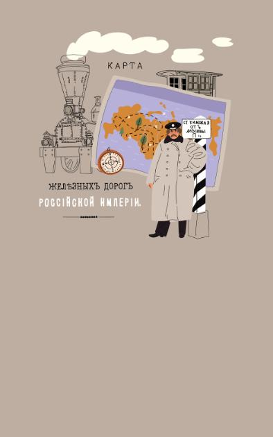
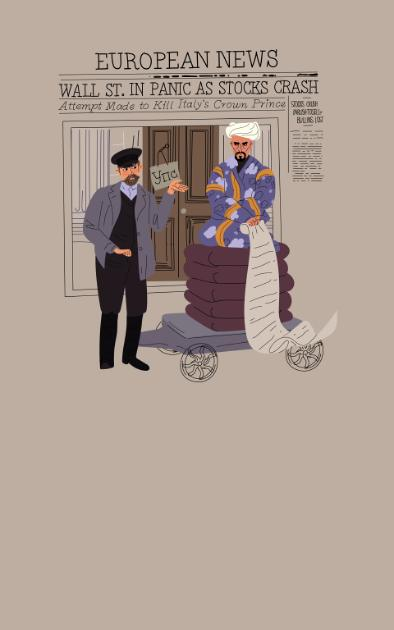

В истории нашей страны было много кризисов, но все их удалось
преодолеть. Рассказываем о главных потрясениях до революции и в
СССР.
1866 – 1867
В России производили больше тканей, чем нужно, а за рубежом упали
цены на хлопок — экспортировать было невыгодно. Экономику спасло
строительство железных дорог: оно развило угольную промышленность и
металлургию.

1873 – 1875
Упали фондовые рынки Европы и США, а в России накопилось
перепроизводство товаров — начались банкротства компаний.
Промышленность спасли высокие пошлины на импорт.

1900 – 1903
Мировой кризис затронул и Россию. Государство поддержало крупные
компании и банки деньгами и сократило заказы за границей.
1923 – 1924
После гражданской войны товары стоили дорого. Компании снизили
издержки — сократили персонал и посредников. Так экономика
постепенно вышла из кризиса.